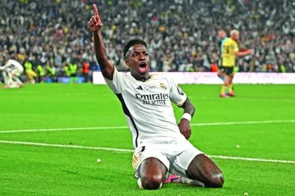
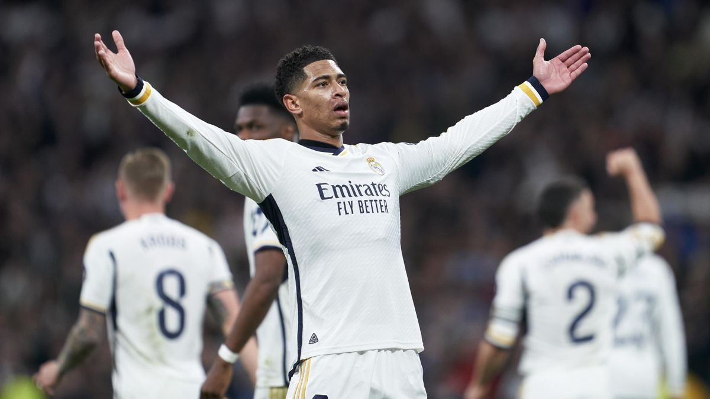
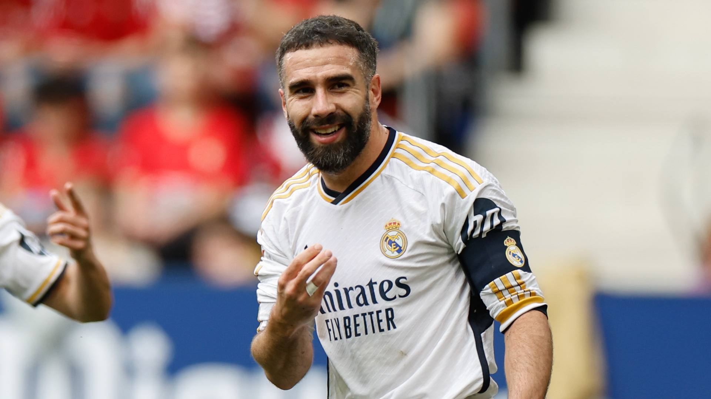
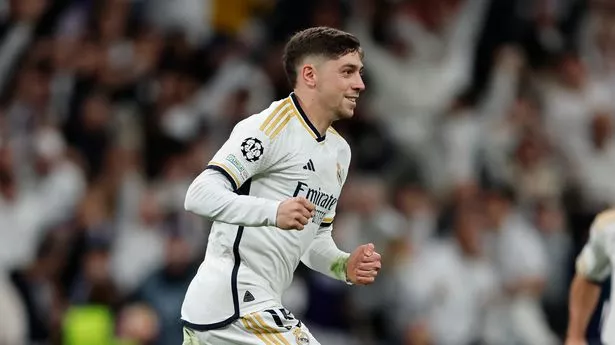
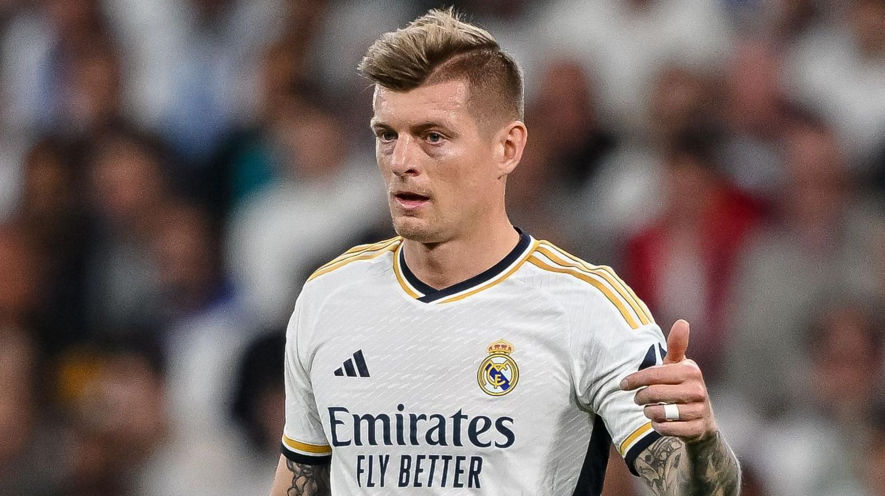
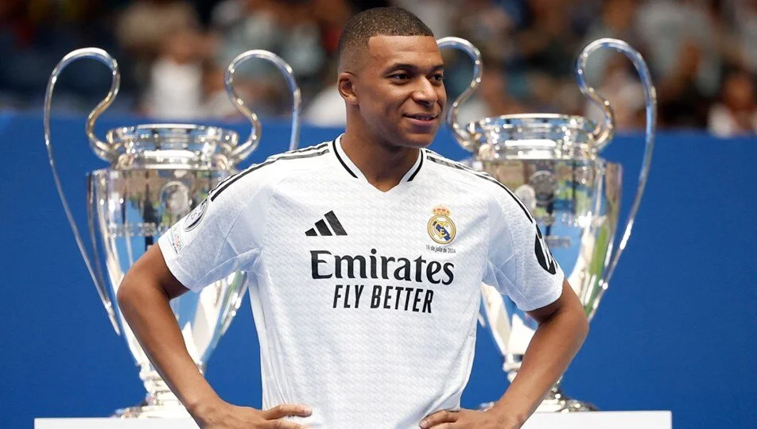
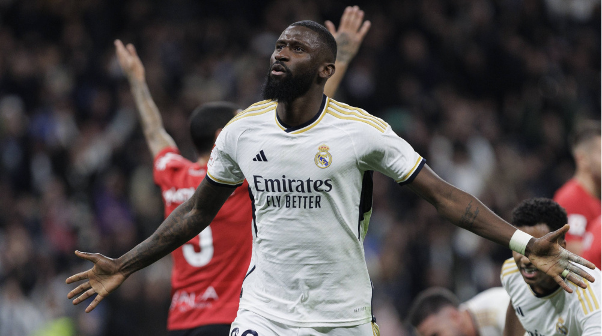

Real Madrid nominated for 2024 Ballon d'Or

About
Vini Jr., Bellingham, Valverde, Carvajal, Rüdiger, Mbappé and Kroos are among the 30 candidates for the 2024 Ballon d'Or, which will be awarded by France Football on 28 October at the Théâtre du Châtelet in Paris. The nominees are chosen for their achievements during the 2023/24 season.
List player nominated for 2024 Ballon d'Or
- Vini Jr.
- Bellingham
- Carvajal
- Valverde
- Tony Kross
- Mbappe
- Rudiger
More information.
Vini Jr.

Bellingham.

Carvajal.

Valverde.

Tony Kroos.

Mbappe.

Rudiger .

Vini Jr. smashed his goal-scoring record in a season with 24 goals, some of which were crucial, such as the one he netted in the final for the Decimoquinta or his hat-trick in the final of the Spanish Super Cup against Barcelona. His Champions League campaign was outstanding (6 goals and 4 assists), which saw him voted best player.
Bellingham had a fantastic first campaign as a Madridista, scoring 23 goals. His stellar performances earned him the award for best player in LaLiga, best young player in the Champions League and the Laureus Award for Best Newcomer to the sport. This season he has already received the MVP award in the Uefa Super Cup. He reached the final of the European Championship with England.
Carvajal capped a historic 2023/24 campaign by becoming a double European champion: with Real Madrid and the Spanish national team. The right-back played a pivotal role throughout the season and scored a career-high six goals. The goal he grabbed in the final for the Decimoquinta, which broke the deadlock against Borussia Dortmund, will be remembered for a long time. He was also selected for the Champions League dream team.
Valverde proved last season that he is one of the elite midfielders in world football. He was Ancelotti's most-used player and made 54 appearances. His performances for Real Madrid were matched by the Uruguayan national team, with whom he finished third in the Copa America.
Tony Kroos’ final playing season came to an unforgettable end with Real Madrid. The German was once again central to our team's midfield and winning the Decimoquinta was the perfect end to a legendary career.
Mbappe racked up his sixth top scorer trophy in the French league with 27 goals in the 2023/24 season. This tally enabled his team to win the championship and he was voted the best player in the league. The striker also won the Coupe de France and the French Super Cup. In addition, Mbappé was the top scorer in the Champions League with 8 goals and was a semi-finalist in the European Championship with France.
Rudiger showed that he is one of the best defenders in the world and his defensive reliability was vital to finishing the season with three trophies. The German international was outstanding in the last edition of the Champions League, where he was selected in the best XI. In the European Championship, he played every game for Germany, reaching the quarter-finals.